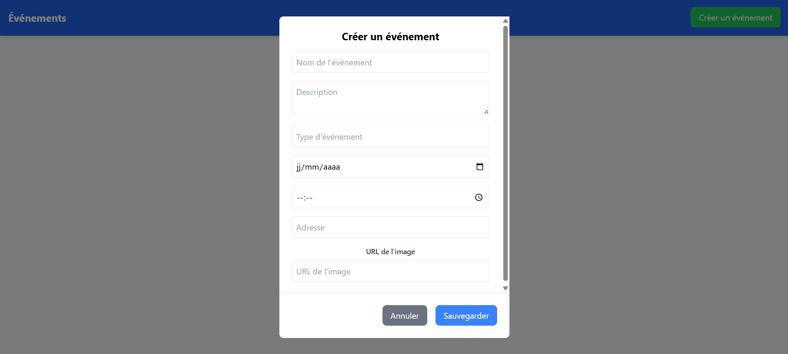
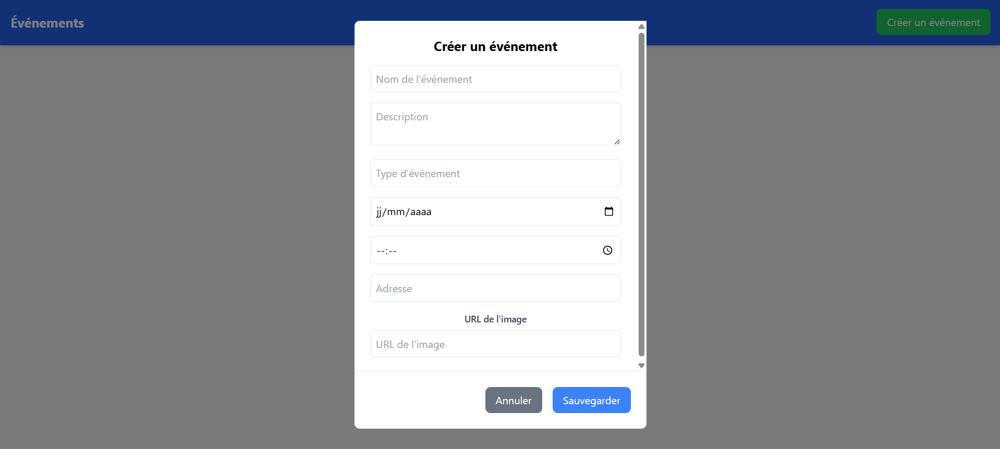

Stage 1ère année BTS SIO (mai/juin 2023)
J’ai effectué mon stage de première année de BTS SIO avec ma professeure référente au sein de l’établissement. Cette
expérience m’a permis de travailler sur un projet concret dans un cadre encadré, mais également formateur et
responsabilisant.
Mon objectif principal était de développer une application web de gestion d’événements. Cette application devait
permettre l’ajout, la modification et la suppression d’événements à travers une interface simple et fonctionnelle, le
tout connecté à une base de données pour assurer la persistance des données.
Pour réaliser ce projet, j’ai découvert et utilisé deux technologies majeures du développement web moderne :
React.js pour le front-end, et Node.js pour le back-end. J’ai ainsi pu apprendre à
structurer un projet avec ces outils, créer des composants React, gérer les états (state) et effectuer des appels API
vers un serveur Node, qui lui-même interagissait avec une base de données (SQL). Afin de mettre en ligne ce projet, j'ai créer les mêmes appels API que j'avait créer avec Node.js mais en PHP.
Cette application m’a permis de :
- Comprendre la logique d’une architecture full-stack moderne (React + Node.js + BDD)
- Créer une interface utilisateur dynamique avec React
- Développer une API REST basique en Node.js ainsi qu'en PHP
- Effectuer des opérations CRUD (Create, Read, Update, Delete)
- Connecter une base de données à une application web
- Gérer les échanges entre le front-end et le back-end
Ce stage m’a énormément apporté, tant sur le plan technique que personnel. J’ai pu faire mes premiers pas dans un environnement de développement moderne, apprendre à structurer mon code, à raisonner comme un développeur, et à résoudre des problèmes concrets.
Même si j’étais encadré, j’ai su faire preuve d’autonomie dans la réalisation de mes tâches. J’ai appris à chercher, à tester et à corriger par moi-même, ce qui a renforcé ma confiance et ma motivation à poursuivre dans le domaine du développement web.
Cette première immersion m’a conforté dans mon choix d’orientation. Aujourd’hui, je continue à approfondir React, Node et bien d’autres technologies, avec l’envie de progresser chaque jour.
Voici le lien qui permet d'accéder à cette application : https://events.jossua-creuzet.fr
Voici le lien qui permet d'accéder au code source de cette application : Github
Voici des images issues de l'application :
 
